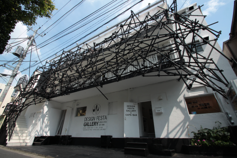
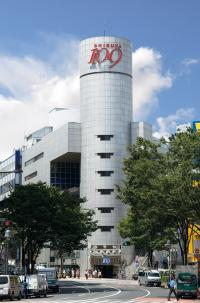
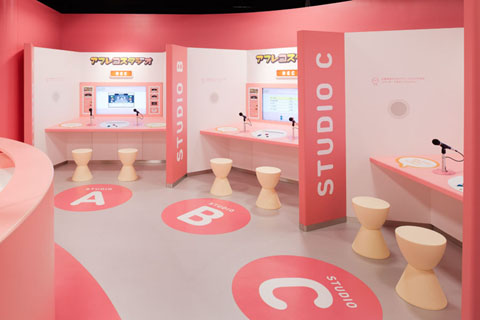

Shinjuku
This district centered around Shinjuku Station, which serves the most passengers in Japan, includes the shopping area of the East Exit and the business area of the West Exit.

Tokyo Metropolitan Government Office
2-8-1 Nishi-Shinjuku

Shinjuku Gyoen
2-8-1 Nishi-Shinjuku

Cocoon Tower
1-7-3 Nishi Shinjuku

Shinjuku LOVE
Shinjuku-ku
Harkajuku
It is the center of Japan's most extreme teenage cultures and fashion styles, but also offers shopping for adults and some historic sights.


Nezu Museum
6-5-1 Minami Aoyama

Design Festa Gallery Harajuku
3-20-18 Jingumae

Omotesando Hills
4-12-10 Jingumae

Yoyogi Park
Yoyogikamizono-cho/2 Jinnan

Shibuya
A youth district full of cute Japanese products. Famous places include the all-time favorite meeting place, the Hachiko statue, and the “Shibuya Scramble Crossing.”

SHIBUYA109
2-29-1 Dogenzaka,

Cosmo Planetarium
Shibuya Cultural Center Owada

Toguri Museum of Art
1-11-3 Shoto

Entire World of NHK
2-2-1, Jinnan